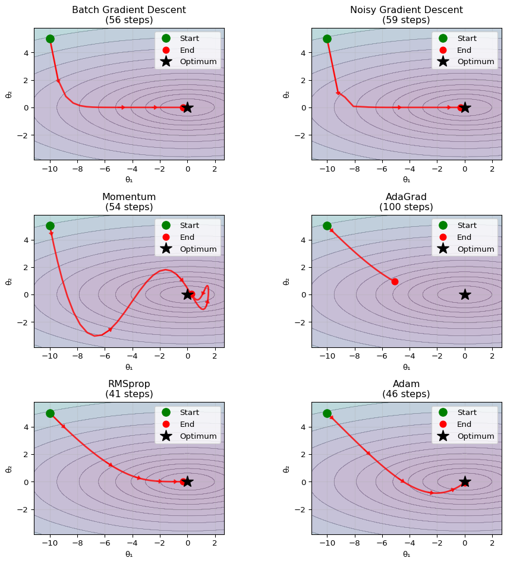

Show the code
import numpy as np
import matplotlib.pyplot as plt
# Set random seed for reproducibility
np.random.seed(42)
# Define loss function (less elongated for clearer visualization)
def f(x, y):
return 1 + 0.1 * x**2 + 1 * y**2 # Less extreme ratio
def df(x, y):
return 0.2 * x, 2 * y
# Create contour plot
x = np.linspace(-12, 12, 100)
y = np.linspace(-8, 8, 100)
X, Y = np.meshgrid(x, y)
Z = f(X, Y)
def run_batch_gd(x0, y0, lr=0.3, n_steps=100):
"""Pure batch gradient descent - smooth path"""
path = [(x0, y0)]
x, y = x0, y0
for _ in range(n_steps):
gx, gy = df(x, y)
x -= lr * gx
y -= lr * gy
path.append((x, y))
if f(x, y) < 1.01:
break
return np.array(path)
def run_sgd(x0, y0, lr=0.3, n_steps=100):
"""Realistic SGD - simulate mini-batch variance"""
path = [(x0, y0)]
x, y = x0, y0
# Generate synthetic dataset that creates natural variance
np.random.seed(123) # Different seed for data generation
data_variance = 0.3 # Controls how much mini-batches differ
for step in range(n_steps):
# Each mini-batch has slightly different gradient estimate
gx_base, gy_base = df(x, y)
# Add realistic mini-batch variance (not just random noise)
gx_noise = np.random.normal(0, data_variance * abs(gx_base * 1))
gy_noise = np.random.normal(0, data_variance * abs(gy_base * 1))
gx = gx_base + gx_noise
gy = gy_base + gy_noise
x -= lr * gx
y -= lr * gy
path.append((x, y))
if f(x, y) < 1.01:
break
return np.array(path)
def run_momentum(x0, y0, lr=0.05, beta=0.9, n_steps=100):
"""Momentum optimizer - shows acceleration and overshooting"""
path = [(x0, y0)]
x, y = x0, y0
vx, vy = 0, 0 # Initialize velocity
for _ in range(n_steps):
gx, gy = df(x, y)
# Update velocity (momentum)
vx = beta * vx + gx
vy = beta * vy + gy
# Update parameters
x -= lr * vx
y -= lr * vy
path.append((x, y))
if f(x, y) < 1.01:
break
return np.array(path)
def run_adagrad(x0, y0, lr=0.3, eps=1e-8, n_steps=100):
"""AdaGrad optimizer - shows stalling behavior"""
path = [(x0, y0)]
x, y = x0, y0
gx_sum_sq, gy_sum_sq = 0, 0
for step in range(n_steps):
gx, gy = df(x, y)
# Accumulate squared gradients
gx_sum_sq += gx**2
gy_sum_sq += gy**2
# AdaGrad update - learning rate decreases over time
effective_lr_x = lr / (np.sqrt(gx_sum_sq) + eps)
effective_lr_y = lr / (np.sqrt(gy_sum_sq) + eps)
x -= effective_lr_x * gx
y -= effective_lr_y * gy
path.append((x, y))
# More lenient stopping criterion to see stalling
if f(x, y) < 1.01 and step > 20:
break
# Stop if steps become too small (stalling)
if step > 10 and effective_lr_x < 1e-4 and effective_lr_y < 1e-4:
break
return np.array(path)
def run_rmsprop(x0, y0, lr=0.3, gamma=0.9, eps=1e-8, n_steps=100):
"""RMSprop optimizer - maintains learning rate"""
path = [(x0, y0)]
x, y = x0, y0
vx, vy = 0, 0
for step in range(n_steps):
gx, gy = df(x, y)
# Update moving average of squared gradients
vx = gamma * vx + (1 - gamma) * gx**2
vy = gamma * vy + (1 - gamma) * gy**2
# RMSprop update - learning rate stays more stable
effective_lr_x = lr / (np.sqrt(vx) + eps)
effective_lr_y = lr / (np.sqrt(vy) + eps)
x -= effective_lr_x * gx
y -= effective_lr_y * gy
path.append((x, y))
# Same stopping criterion
if f(x, y) < 1.01 and step > 20:
break
return np.array(path)
def run_adam(x0, y0, lr=0.3, beta1=0.9, beta2=0.999, eps=1e-8, n_steps=100):
"""Adam optimizer"""
path = [(x0, y0)]
x, y = x0, y0
mx, my = 0, 0
vx, vy = 0, 0
for t in range(1, n_steps + 1):
gx, gy = df(x, y)
# Update moments
mx = beta1 * mx + (1 - beta1) * gx
my = beta1 * my + (1 - beta1) * gy
vx = beta2 * vx + (1 - beta2) * gx**2
vy = beta2 * vy + (1 - beta2) * gy**2
# Bias correction
mx_hat = mx / (1 - beta1**t)
my_hat = my / (1 - beta1**t)
vx_hat = vx / (1 - beta2**t)
vy_hat = vy / (1 - beta2**t)
# Update parameters
x -= lr * mx_hat / (np.sqrt(vx_hat) + eps)
y -= lr * my_hat / (np.sqrt(vy_hat) + eps)
path.append((x, y))
if f(x, y) < 1.01:
break
return np.array(path)
# Run all optimizers from the same starting point
start_x, start_y = -10, 5
path_batch = run_batch_gd(start_x, start_y)
path_sgd = run_sgd(start_x, start_y)
path_momentum = run_momentum(start_x, start_y)
path_adagrad = run_adagrad(start_x, start_y)
path_rmsprop = run_rmsprop(start_x, start_y)
path_adam = run_adam(start_x, start_y)
# Plot - using 2x3 grid to accommodate all 6 optimizers
fig, axes = plt.subplots(3, 2, figsize=(10, 10))
axes = axes.flatten()
paths_and_titles = [
(path_batch, 'Batch Gradient Descent'),
(path_sgd, 'Stochastic Gradient Descent'),
(path_momentum, 'Momentum'),
(path_adagrad, 'AdaGrad'),
(path_rmsprop, 'RMSprop'),
(path_adam, 'Adam')
]
for i, (path, title) in enumerate(paths_and_titles):
ax = axes[i]
# Create contour background
levels = np.logspace(0, 2, 15) # Better level spacing
ax.contour(X, Y, Z, levels=levels, alpha=0.6, colors='gray', linewidths=0.5)
ax.contourf(X, Y, Z, levels=levels, alpha=0.3, cmap='viridis')
# Plot optimization path
ax.plot(path[:, 0], path[:, 1], 'r-', linewidth=2, alpha=0.8)
ax.plot(path[0, 0], path[0, 1], 'go', markersize=10, label='Start', zorder=5)
ax.plot(path[-1, 0], path[-1, 1], 'ro', markersize=8, label='End', zorder=5)
ax.plot(0, 0, 'k*', markersize=15, label='Optimum', zorder=5)
# Add arrows to show direction (fewer arrows for clarity)
if len(path) > 5:
arrow_indices = np.linspace(0, len(path)-2, min(6, len(path)-1), dtype=int)
for j in arrow_indices:
dx = path[j+1, 0] - path[j, 0]
dy = path[j+1, 1] - path[j, 1]
# Only draw arrow if movement is significant
if np.sqrt(dx**2 + dy**2) > 0.1:
ax.arrow(path[j, 0], path[j, 1], dx, dy,
head_width=0.3, head_length=0.2, fc='red', ec='red', alpha=0.7)
ax.set_aspect('equal', adjustable='box')
ax.set_title(f'{title}\n({len(path)-1} steps)')
ax.set_xlabel('θ₁')
ax.set_ylabel('θ₂')
ax.legend(loc='upper right')
ax.grid(True, alpha=0.3)
ax.set_xlim(-12, 3)
ax.set_ylim(-2, 6)
plt.tight_layout()
plt.show()